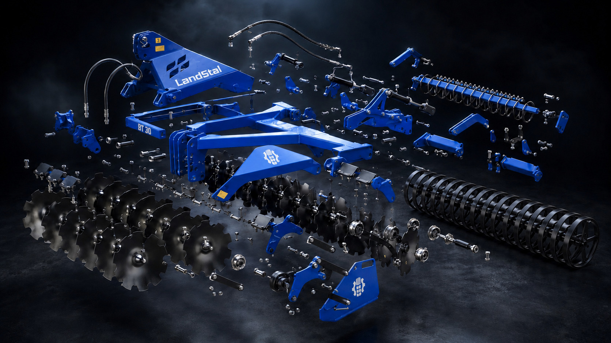

Diskový podmítač
Landstal BT
Rychlá a kvalitní příprava půdy s robustním rámem, hydraulickým nastavením pracovní hloubky a volbou disků 560 nebo 610 mm.
šířka od 2.5 m
disky 560 / 610 mm
V-kroužkový válec

Scroll visual
Od pracovního stroje k jednotlivým dílům
Posouvejte stránku dolů. Stroj se vizuálně rozpadne do konstrukčních celků: rám, diskové sekce, hydraulika, šroubové spoje a zadní válec.

Rám
Disky
Válec
Hydraulika
Video
BT v pohybu
Referenční video je vložené lokálně, takže zůstává součástí webové složky.
Proč BT
Stabilní práce a jednoduché nastavení
Diskový podmítač BT je vhodný pro rychlé zpracování strniště, promíchání rostlinných zbytků a přípravu půdy před dalším přejezdem. Konfiguraci přizpůsobíme traktoru, typu půdy a požadovanému výsledku.